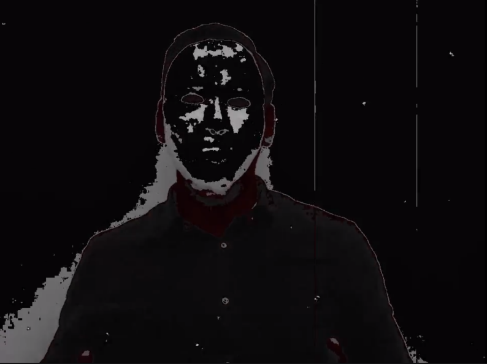

Fué un juego propuesto por parte de los maestros de las materias de Programación Web y Administración de base de datos, con el fin de hacer una manera mas dinámica el aprendizaje y desarrollo de la materia.
El cual consistia en realizar retos diarios para obtener una pista para el reto del siguiente día.
Durante el fin de semana antes habiamos recibido un correo extraño de parte de nuestro catedrático de Bases de datos, donde decia que nuestro laboratorio correspondiente a esta semana no se evaluaria de una manera convencional ya que los intrucctores no se presentaban muy dispuestos debido que habia una situación de la cual no tenia conocimiento.
Una visión perversa
Lunes 7/10/2019
Este dia me correspondía la clase de Programación Web durante la tarde, el profesor dijo que nos tenia una sorpresa para el final, todos pensamos que seguro era otro ejercicio, pero no, al llegar al final dijo que dejáramos de hacer lo que estábamos haciendo y pusiéramos atención; se nos coloco un video donde una persona que se hacía llama Ale Rav a la cual no se identificaba su cara, ni su voz amenazaba con destruir la universidad ya que al destruirla a todos los estudiantes se nos otorgaría el titulo... La verdad sonaba tentador xD...
Luego se nos colocó un audio donde el autor se hacía llamar Kurt el cual no podía creer lo que estaba pasando ya que Ale Rav era su amigo, y estaba dispuesto a detenerlo ya que no estaba bien querer destruir la U, se nos proporciono un link que direccionaba a una página que nos indicaba como ayudar a Kurt
Kurt nos propuso un reto dada una base de datos debíamos crear una función que permitiera validar números de DUI debido aun formato que nos proporcionaba luego eso desbloquearía la siguiente pista.
Martes 8/10/2019
Luego de completar el reto del "Día 1", la pista era un nuevo link el cual incorporaba una nueva persona a la lucha contra Ale Rav esta persona se hacía llamar Ada Jarvis, quien le había dicho Kurt que había descubierto el código que haría detonar las bombas en la universidad. Pero Ale Rav había descubierto la identidad de Ada así que ella desapareció y lo único que le dejo a Kurt fue un texto sin sentido, pero para Kurt tenia sentido ya que el la conocía muy bien, y este lo guiaba al polideportivo, así que nos pidió que fuéramos allá y buscáramos a lo que Ada se refería.

En el polideportivo había escondido un código QR que nos direccionaba a un link donde Ada describía el segundo reto en el cual se debía utilizar la misma base de datos que el día anterior y agregarle una nueva función que retornaba un trigger el cual verificaba que si una persona era representante de un departamento también debería de pertenecer a él.
Miercoles 9/10/2019
Completado el reto del "Día 2", se tuvo acceso al siguiente link el cual había un nuevo mensaje de Kurt donde felicitaba por haber llegado hasta ahí y describía el lugar donde se debía buscar el cual era el mural que sé está pintando en el atrio de las aulas D y le pareció un lugar perfecto ya que era todo lo contrario al objetivo de Ale Rav, ya que este mural representaba exposición pero de color y positivismo.

En el lugar el señor encargado del mural nos proporcionó un código QR que dirigía a un nuevo link donde estaba adjuntado además un audio donde Kurt contaba como había sido de cercana su relación con Ale Rav, que incluso se habían implantado chips que les permitía comunicarse entre ellos, también contaba como descubrió que era lo que Ale tramaba y expresaba lo triste que lo ponía el hecho que él quisiera llevar acabo un plan tan siniestro, pero el hecho que haya sido su amigo no lo haría desistir hasta detenerlo.
En el link que se obtuvo en el mural estaba además descrito el nuevo desafía el cual era elaborar un trigger que permitiera mantener la coherencia entre la clasificación de miembro en sus subclases y el atributo denominacion_departamento
Jueves 10/10/2019
Al parecer al superar el desafío 3 todo había acabado ya que las detonaciones habían sido canceladas, porque el último link al que se tuvo acceso mediante la elaboración del reto del "Día 3" tenia un programa para desactivar las bombas, y lo último del mensaje que dejo Kurt decía que ya podíamos estar en paz por el momento y cualquier cosa el la comunicaría.

Pero el juego aún no acaba durante la clase de base de datos un nuevo video de Ale Rav fue proyectado donde decía que nada frustraría su plan aun cuando personas cercanas a él lo habían traicionado y que estas personas pagarían.
Luego de el video un audio de Kurt también fue colocado donde pedia ayuda porque debía mantenerse alejado de Ale Rav y que por favor saliéramos todos a la terraza donde nos haría llegar un nuevo mensaje.
Un dron llego al lugar trayendo un nuevo código QR que enlazaba con otro mensaje de Kurt donde expresaba su pánico y su tristeza, y donde pedia que le ayudáramos a superar un desafía más crear una función que cuando se elimine algún elemento de las subclases se elimine automáticamente de la superclase.
Viernes 11/10/2019
El dia esperado a llegado es viernes la bomba ha sido desactivada, el ultimo reto tenia como instrucciones ir a la magna V a las 5pm donde seria revelado quien estaba detras de la mascara y el nombre de Ale Rav.
Al llegar la hora Kurt dio su rostro y nos conto que se iria del país y que podria estar con Ada ya que ella le gustaba mucho, ademas mostro las pruebas de quien era Ale Rav, y es un ex-profesor de base de datos que por cierto tambien fué mi profesor nadie se esperaba eso de el.
Todo iba bien hasta que Kurt empezo a sentirse mal y a toser hasta caer muerto en la tarima de la magna V, Ale Rav lo habia matado utilizando el chip que se habian implantado hizo explotar su corazón.
Espero Ada logre encontrar a Ale Rav y el de su merecido...